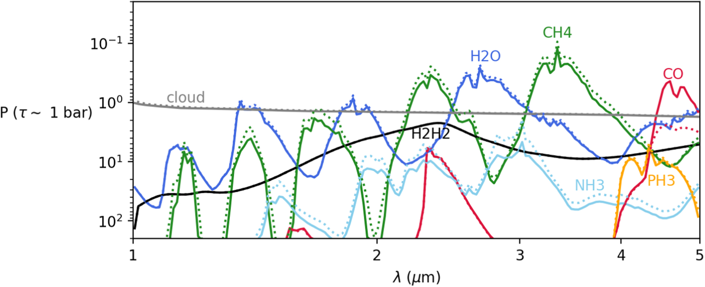
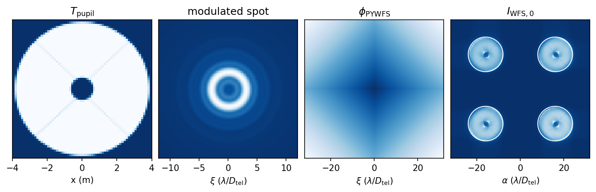
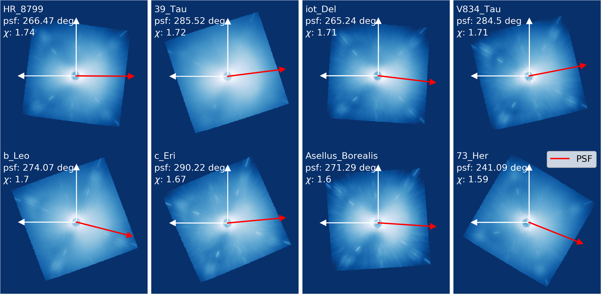
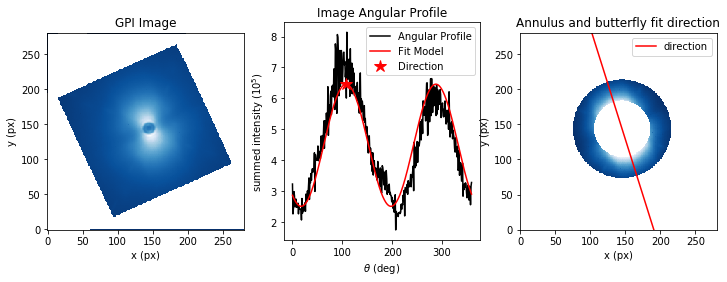

The Infrared Colors of 51 Eridani b: Micrometeoroid Dust or Chemical Disequilibrium?
Alexander Madurowicz, Sagnick Mukherjee, Natasha Batalha, Bruce Macintosh, Mark Marley, Theodora Karalidi
Abstract | We reanalyze the near-infrared spectra of the young extrasolar giant planet 51 Eridani b, which was originally presented in Macintosh et al. and Rajan et al. using modern atmospheric models, including a self-consistent treatment of disequilibrium chemistry due to turbulent vertical mixing. In addition, we investigate the possibility that significant opacity from micrometeors or other impactors in the planet's atmosphere may be responsible for shaping the observed spectral energy distribution (SED). We find that disequilibrium chemistry is useful for describing the mid-infrared colors of the planet's spectra, especially in regard to photometric data at the M band around 4.5 μm, which is the result of superequilibrium abundances of carbon monoxide, while the micrometeors are unlikely to play a pivotal role in shaping the SED. The best-fitting, micrometeoroid dust–free, disequilibrium chemistry, patchy cloud model has the following parameters: effective temperature Teff = 681 K with clouds (or without clouds, i.e., the grid temperature Tgrid = 900 K), surface gravity g = 1000 m s−2, sedimentation efficiency fsed = 10, vertical eddy diffusion coefficient Kzz = 103 cm2 s−1, cloud hole fraction fhole = 0.2, and planet radius Rplanet = 1.0 RJup.
Integral Field Spectroscopy with the Solar Gravitational Lens
Alexander Madurowicz and Bruce Macintosh
Abstract | The prospect of combining integral field spectroscopy with the solar gravitational lens (SGL) to spectrally and spatially resolve the surfaces and atmospheres of extrasolar planets is investigated. The properties of hyperbolic orbits visiting the focal region of the SGL are calculated analytically, demonstrating trade-offs between departure velocity and time of arrival, as well as gravity assist maneuvers and heliocentric angular velocity. Numerical integration of the solar barycentric motion demonstrates that navigational acceleration of dv < 80 m/s + 6.7 m/s/year is needed to obtain and maintain alignment. Obtaining target ephemerides of sufficient precision is an open problem. The optical properties of an oblate gravitational lens are reviewed, including calculations of the magnification and the point-spread function that forms inside a telescope. Image formation for extended, incoherent sources is discussed when the projected image is smaller than, approximately equal to, and larger than the critical caustic. Sources of contamination that limit observational signal-to-noise ratio (S/N) are considered in detail, including the Sun, the solar corona, the host star, and potential background objects. A noise mitigation strategy of spectrally and spatially separating the light using integral field spectroscopy is emphasized. A pseudo-inverse-based image reconstruction scheme demonstrates that direct reconstruction of an Earth-like source from single measurements of the Einstein ring is possible when the critical caustic and observed S/N are sufficiently large. In this arrangement, a mission would not require multiple telescopes or navigational symmetry breaking, enabling continuous monitoring of the atmospheric composition and dynamics on other planets.

Resolving Exo-Continents with Einstein Ring Deconvolution
Alexander Madurowicz
Abstract | A mission to the focus of the solar gravitational lens could produce images with unprecedented angular resolution and sensitivity. In the context of trying to resolve the time variable thermal signature of continents on other Earth-like exoplanets, we develop an approach to improve the image reconstruction performance by using azimuthal variations in the Einstein Ring's intensity. In the first post-Newtonian approximation to General Relativity, an arbitrary disk intensity distribution in the source plane is mapped to a narrow annulus around the Einstein Ring, with each azimuthal element corresponding to a sector in the disk. A matrix-based linear measurement model at various fixed signal-to-noise ratios demonstrates that this extra information is useful in improving the reconstruction when the image is sparsely sampled, which could improve integration times and temporal errors. Various issues and future outlooks are discussed.
GPI 2.0: optimizing reconstructor performance in simulations and preliminary contrast estimates
Alexander Madurowicz, Bruce Macintosh, Lisa Poyneer, Duan Li, Jean-Baptiste Ruffio, Jean-Pierre Veran, S. Mark Ammons, Dmitry Savransky, Jeffrey Chilcote, Jerome Maire, Quinn Konopacky, Robert J. De Rosa, Christian Marois, Marshall Perrin, Laurent Pueyo
Abstract | During its move from the mountaintop of Cerro Pachon in Chile to the peak of Mauna Kea in Hawaii, the Gemini Planet Imager will receive various upgrades, including a pyramid wavefront sensor. As a non-linear sensor, a standard approach to linearize the response of the pyramid is induce a rapid circular modulation of the beam around the pyramid tip, trading off sensitivity for robustness during high turbulence. Using high temporal resolution Fourier Optics based simulations, we investigate phase reconstruction approaches that attempt to optimize the performance of the sensor with a dynamically adjustable modulation parameter. We have studied the linearity and gain stability of the sensor under different modulation and seeing conditions, and the ability of the sensor to correct non-common-path errors. We will also show performance estimates which includes a comparative analysis of the atmospheric columns above the two mountains, as well as the Error Transfer Function of the two systems.
Asymmetries in adaptive optics point spread functions
Alexander Madurowicz, Bruce Macintosh, Jeffrey Chilcote, Marshall Perrin, Lisa Poyneer, Laurent Pueyo, Jean-Baptiste Ruffio, Vanessa P. Bailey, Travis Barman, Joanna Bulger, Tara Cotten, Robert J. De Rosa, René Doyon, Gaspard Duchêne, Thomas M. Esposito, Michael P. Fitzgerald, Katherine B. Follette, Benjamin L. Gerard, Stephen J. Goodsell, James R. Graham, Alexandra Z. Greenbaum, Pascale Hibon, Li-Wei Hung, Patrick Ingraham, Paul Kalas, Quinn Konopacky, Jérôme Maire, Franck Marchis, Mark S. Marley, Christian Marois, Stanimir Metchev, Maxwell A. Millar-Blanchaer, Eric L. Nielsen, Rebecca Oppenheimer, David Palmer, Jennifer Patience, Abhijith Rajan, Julien Rameau, Fredrik T. Rantakyrö, Dmitry Savransky, Anand Sivaramakrishnan, Inseok Song, Rémi Soummer, Melisa Tallis, Sandrine Thomas, Jason J. Wang, Kimberly Ward-Duong, Schuyler Wolff
Abstract | An explanation for the origin of asymmetry along the preferential axis of the point spread function (PSF) of an AO system is developed. When phase errors from high-altitude turbulence scintillate due to Fresnel propagation, wavefront amplitude errors may be spatially offset from residual phase errors. These correlated errors appear as asymmetry in the image plane under the Fraunhofer condition. In an analytic model with an open-loop AO system, the strength of the asymmetry is calculated for a single mode of phase aberration, which generalizes to two dimensions under a Fourier decomposition of the complex illumination. Other parameters included are the spatial offset of the AO correction, which is the wind velocity in the frozen flow regime multiplied by the effective AO time delay and propagation distance or altitude of the turbulent layer. In this model, the asymmetry is strongest when the wind is slow and nearest to the coronagraphic mask when the turbulent layer is far away, such as when the telescope is pointing low toward the horizon. A great emphasis is made about the fact that the brighter asymmetric lobe of the PSF points in the opposite direction as the wind, which is consistent analytically with the clarification that the image plane electric field distribution is actually the inverse Fourier transform of the aperture plane. Validation of this understanding is made with observations taken from the Gemini Planet Imager, as well as being reproducible in end-to-end AO simulations.
Characterization of lemniscate atmospheric aberrations in Gemini Planet Imager data
Alexander Madurowicz, Bruce A. Macintosh, Jean-Baptiste Ruffio, Jeffery Chilcote, Vanessa P. Bailey, Lisa Poyneer, Eric Nielsen, Andrew P. Norton
Abstract | A semi analytic framework for simulating the effects of atmospheric seeing in Adaptive Optics systems on an 8-m telescope is developed with the intention of understanding the origin of the wind-butterfly, a characteristic twolobed halo in the PSF of AO imaging. Simulations show that errors in the compensated phase on the aperture due to servo-lag have preferential direction orthogonal to the direction of wind propagation which, when Fourier Transformed into the image plane, appear with their characteristic lemniscate shape along the wind direction. We develop a metric to quantify the effect of this aberration with the fractional standard deviation in an annulus centered around the PSF, and use telescope pointing to correlate this effect with data from an atmospheric models, the NOAA GFS. Our results show that the jet stream at altitudes of 100-200 hPa (equivalently 10-15 km above sea level) is highly correlated (13.2σ) with the strong butterfly, while the ground wind and other layers are more or less uncorrelated.
